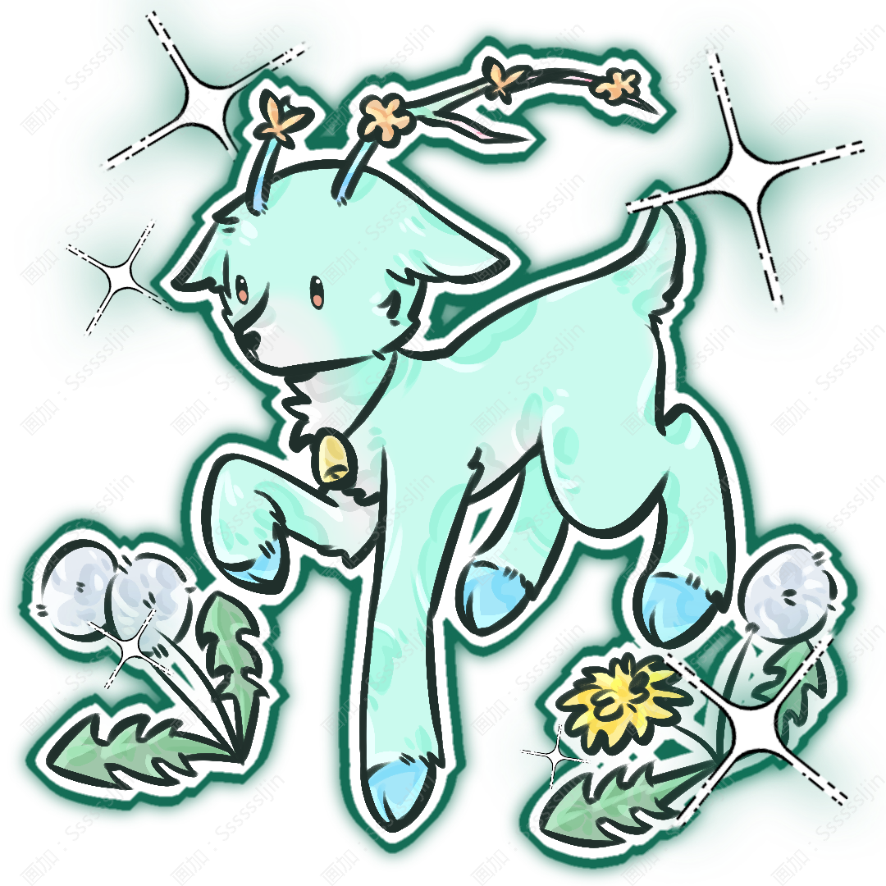

Fulinn
浮鈴

姓名：浮鈴。
英文：Fulinn。
種族：鹿系真裔。
性別：女。
生日：7月12日。
年齡：年齡 63 歲；相當於人類15歲。
居住：平時家庭仍在瑟蘭迪斯；因爲學校當前沒有宿舍，需要通過穩定的跨地區交通每日通勤，或暫時與在學校所在城市的親屬居住。具體方式等學校地點確定後再定。
身高：158cm。
體重：45kg。
薄荷綠色長髮，藍色漂染，粉色眼睛。頭頂生有一對十分顯眼的鹿角，顏色從根部的藍色逐漸過渡爲綠色，最末端則變成柔和的粉色。
鹿角上長期繫着絲帶、花草與幾枚小鈴鐺，其中至少有一枚鈴鐺無論換什麼裝飾都會保留下來。
擁有淺綠色鹿耳，化形不完全時腿部也會保留少量鹿系特徵。
整體外貌輕盈而柔和，跑動時鹿角上的鈴鐺會發出很輕的聲音。
自由、好奇、天然，有一點隨心所欲。
她並不是笨，而是思考方式經常和別人不在同一條線上。
別人正在認真討論怎麼從正門進去時，她可能已經指着旁邊的窗戶問：“爲什麼不能從那裏進去？”她非常擅長觀察自然環境，卻經常記不住人類社會中複雜的規矩。
方向感極好，幾乎不會在森林裏迷路，但進入結構複雜的大城市以後反而可能找不到自己剛剛住過的旅店。
小鈴鐺很容易相信自己的直覺，也很少長時間煩惱。
難過的時候會自己跑進森林待一會兒，等再次出現時通常已經恢復原來的樣子。
世界頂尖綜合學院中學部學生；主角三人組成員。
採花、收集不同形狀的葉子、編花環、爬樹、躺在草地上睡覺、跟着風到處亂走；
看到特別圓的石頭會撿回來，但撿回來以後通常也不知道要拿來做什麼。
沒有特別宏大的理想。
她想看遍自己沒見過的森林、花和天空，然後有一天找到一個“風吹起來最好聽”的地方，在那裏建一間小房子。
辨認植物、草藥採集、森林導航、追蹤、奔跑與閃避、攀爬、風屬性控制；
能夠通過植物與動物留下的痕跡判斷附近最近發生過什麼。
力量：★★☆☆☆
體力：★★★★☆
智慧：★★★☆☆
魅力：★★★★☆
幸運：★★★★★
武器：巨型蒲公英。
屬性：風。
技能：
「飄散」
浮鈴揮動蒲公英，大量白色絨毛隨着風向四周散開。絨毛本身幾乎沒有攻擊力，卻會停留在空氣中。只要附近出現明顯移動，氣流便會帶動絨毛改變方向，因此浮鈴可以通過觀察它們判斷周圍目標的位置與移動方向。
「逐風」
將風屬性集中在腳下與身體周圍，大幅減輕自身移動時受到的阻力。她能夠突然加速、改變方向，也可以借風從高處安全落下。因爲她本身就是鹿系真裔，這個能力與她原本優秀的奔跑能力結合以後，使她極難被追上。
「蒲絨」
將蒲公英絨毛集中在指定目標周圍，再利用風屬性讓大量絨毛快速旋轉。可以干擾視線，也能夠改變箭矢、小型飛行物或部分遠程攻擊的方向。她通常把這個能力用於保護別人。
大招「風原」
浮鈴將巨型蒲公英舉起，所有絨毛瞬間散向周圍。大量風屬性沿着絨毛所在的位置展開，使整片區域形成不斷變化的氣流。敵人的移動會被逆風阻礙，而浮鈴與她選擇保護的人則能夠藉助順風快速移動。最後，所有散開的蒲公英絨毛同時升上空中，形成一陣強烈上升氣流，將範圍內的威脅強行推離原本位置。
特殊能力: 浮鈴對空氣流動的感知遠超普通人。在自然環境中，她能夠通過風判斷前方是否存在大型障礙、附近是否有人快速移動，以及某個方向是否存在開闊區域。但這並不是讀心或精準探測。完全靜止的目標、密閉空間以及氣流極其混亂的環境都會明顯削弱她的判斷。
血脈特徵：擁有鹿耳與漸變鹿角，能夠隱藏鹿耳，但隱藏不了鹿角，腿部爆發力與平衡能力遠強於普通人。
啾啾。
種類：小型鳥類靈獸。
屬性：無明顯戰鬥屬性。
啾啾是一隻體型非常小的圓滾滾鳥類靈獸，羽毛以奶黃色與淺綠色爲主，翅膀邊緣帶有一點粉色。
它最喜歡停在浮鈴的鹿角之間。
兩者第一次見面的時候，啾啾甚至不是因爲喜歡浮鈴才留下來的。
它只是發現——小鈴鐺的鹿角非常適合築巢。
於是第二天，浮鈴醒來以後發現自己鹿角上多了幾根樹枝。
第三天又多了草。
第四天已經快變成一個完整的鳥窩。
浮鈴不僅沒有把它拆掉，反而主動幫忙找了一些她覺得漂亮的小花塞進去。
從那以後，啾啾便經常跟着她。
當然，它後來還是被教育不能真的在浮鈴頭上建永久鳥窩。所以現在通常只是停在那裏休息。
浮鈴鹿角上的鈴鐺有時候會被啾啾故意用嘴啄響。然後浮鈴就會抬頭，雖然她根本看不到自己頭頂。